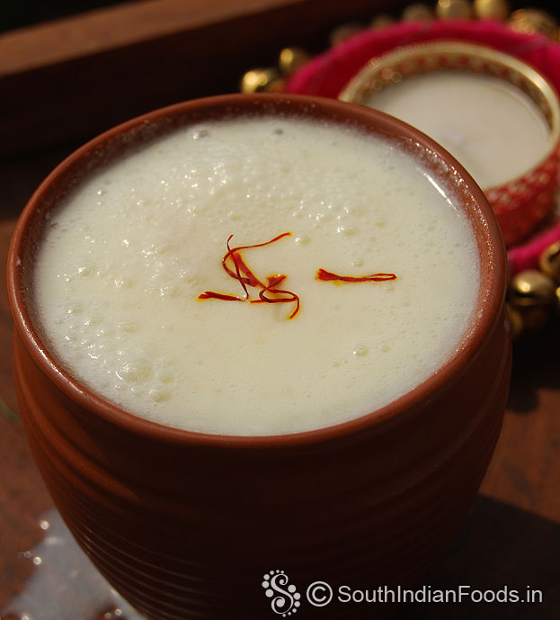

Punjabi food is wholesome and full of rustic flavour. The custom of cooking in community ovens or tandoors
prevails in rural pockets even today. The cuisine is characterised by a profusion of dairy products in the
form of malai, paneer and dahi. The dals are a speciality of this type of cuisine, made of whole pulses like
black gram, green gram and Bengal gram. They are cooked on slow fire, often simmered for hours till they
turn creamy and then flavoured with spices and rounded off with malai for that rich finish. The food is
simply delicious.
The most unique thing about cooking in a tandoor is the smoky flavour that the food gets making it tastier.
Moreover it is a healthy way of cooking since minimum fat is required and the food generally gets cooked in
its own juices thus retaining its natural flavours. Besides it is not only easy to digest, it is also very
hygienic. In conclusion one can safely say that it is through tandoori cooking that Indian cuisine first got
globally acknowledged.